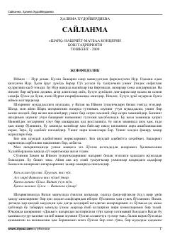

SHalima Xudoyberdiyevaning Vatanni ulug'lovchi va milliy ruhni tarannum etuvchi sara she'rlari to'plami.
Ushbu kitob taniqli o'zbek shoirasi Halima Xudoyberdiyevaning turli yillarda yozilgan sara she'rlari va dostonlarini o'z ichiga olgan saylanma to'plamdir. Asarlarda Vatan, milliy o'zlik, muhabbat, tarixiy xotira va insoniy tuyg'ular yuksak badiiy mahorat bilan tarannum etilgan. To'plam o'zbek she'riyatining muhim namunalaridan biri sifatida kitobxonlarga taqdim etilgan.